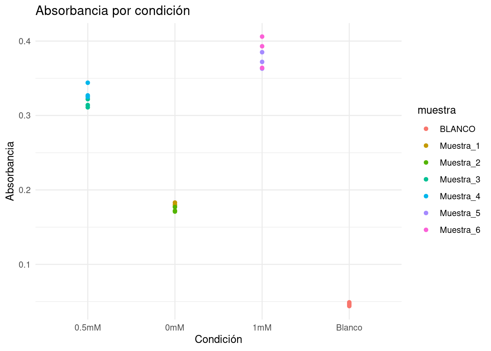

Absorbancia T_0mM T_0.5mM T_1mM
Min. :500 Min. :0.1710 Min. :0.3110 Min. :0.3630
1st Qu.:500 1st Qu.:0.1732 1st Qu.:0.3160 1st Qu.:0.3660
Median :500 Median :0.1775 Median :0.3235 Median :0.3785
Mean :500 Mean :0.1768 Mean :0.3238 Mean :0.3805
3rd Qu.:500 3rd Qu.:0.1795 3rd Qu.:0.3265 3rd Qu.:0.3910
Max. :500 Max. :0.1830 Max. :0.3440 Max. :0.4060
Control
Min. :0.04400
1st Qu.:0.04525
Median :0.04650
Mean :0.04650
3rd Qu.:0.04775
Max. :0.04900
# Create a tabledatos <-data.frame(condicion =rep(c("0mM", "0.5mM","1mM","Blanco"), each =6 ), # 6 réplicas por tratamiento (3 por muestra)muestra =rep(c("Muestra_1", "Muestra_2","Muestra_3","Muestra_4","Muestra_5","Muestra_6", "BLANCO","BLANCO"), each =3), # Cada muestra tiene 3 réplicasreplica =rep(1:3, times =8), # Número de réplicaabsorbancia =c(0.183, 0.18,0.178,0.177,0.171,0.172,0.311, 0.322, 0.314,0.344, 0.327,0.325,0.363, 0.385, 0.372,0.364, 0.406, 0.393,0.045,0.049,0.048,0.047,0.046, 0.044))# Ver la tablaprint(datos)
# Calcular la media y desviación estándar por condiciónresumen <- datos %>%group_by(condicion) %>%summarise(media_absorbancia =mean(absorbancia),sd_absorbancia =sd(absorbancia) )print(resumen)
La Ley de Lambert-Beer es fundamental en espectroscopía y química analítica, y establece que:
[ A = c l ]
Donde: - (A): Absorbancia medida (sin unidad). - (): Coeficiente de absorción molar (L·mol({-1})·cm({-1})), una constante que depende de la sustancia y la longitud de onda. - (c): Concentración de la sustancia en la muestra (mol·L(^{-1})). - (l): Longitud del trayecto óptico o de la celda (cm), típicamente es 1 cm.
¿En qué contexto puedes aplicar la Ley de Lambert-Beer?
Determinación de concentración: Si conoces el coeficiente de absorción molar (()) y la longitud del trayecto óptico ((l)), puedes usar la absorbancia medida ((A)) para calcular la concentración ((c)) de una sustancia desconocida.
Ejemplo:
Si estás analizando la concentración de oro en una solución después de una tinción, puedes medir la absorbancia y, usando el coeficiente (), determinar cuánto oro está presente.
Verificación de linealidad: La Ley de Lambert-Beer es válida en un rango lineal de concentraciones. Si trazas un gráfico de (A) vs. (c), debe ser una línea recta. Esto te ayuda a:
Comprobar si tu sistema experimental está en el rango válido.
Determinar () (pendiente de la gráfica si (l = 1)).
Evaluación de la pureza o composición de una muestra: Comparando la absorbancia medida con valores esperados para sustancias puras, puedes detectar impurezas o variaciones en las propiedades ópticas.
¿Qué buscarías analizar usando esta ley?
Concentración de un compuesto: En muestras complejas, puedes analizar la cantidad de un compuesto específico que absorbe a una longitud de onda determinada. Ejemplo: Determinar la cantidad de oro en una solución coloreada usando absorbancia a 450 nm.
Eficiencia de tinción: Si estás utilizando una tinción basada en oro (como para biomarcadores), la absorbancia te indicará qué tan eficiente fue la tinción.
Características ópticas del compuesto: Determinar el coeficiente de absorción molar (()) para una sustancia nueva o bajo condiciones particulares.
Estudios cinéticos: Si mides la absorbancia en función del tiempo, puedes estudiar reacciones químicas que cambien la concentración de sustancias absorbentes.
Ejemplo práctico
Si deseas calcular concentraciones usando tus datos de absorbancia, asegúrate de tener: 1. El valor de () para tu compuesto a la longitud de onda de medición. 2. La longitud del trayecto óptico ((l)), generalmente proporcionada por el fabricante de la cubeta.
Fórmula para concentración:
[ c = ]
# Parámetros experimentalesepsilon <-18000# Coeficiente de absorción molar en L·mol^-1·cm^-1 (ajusta según tu compuesto)l <-1# Longitud del trayecto óptico en cm (usualmente 1 cm)M <-408.5# g/mol# Calcular concentraciones usando la Ley de Lambert-Beerdatos <- datos %>%mutate(concentracion_mol_L = absorbancia / (epsilon * l)) %>%mutate(concentracion_ug_mL = concentracion_mol_L * M * (10**6))# Verificar los resultadoshead(datos)
# Resumir las concentraciones promedio por condición y muestraresumen_concentraciones <- datos %>%group_by(condicion, muestra) %>%summarise(concentracion_media =mean(concentracion_ug_mL),concentracion_sd =sd(concentracion_ug_mL),n =n(),.groups ='drop' )# Mostrar el resumenprint(resumen_concentraciones)
# Graficar absorbancia y concentracioneslibrary(ggplot2)# Gráfico de absorbanciaggplot(datos, aes(x = condicion, y = absorbancia, color = muestra)) +geom_point() +labs(title ="Absorbancia por condición", x ="Condición", y ="Absorbancia") +theme_minimal()

# Gráfico de concentraciónggplot(datos, aes(x = condicion, y = concentracion_ug_mL, color = muestra)) +geom_point() +labs(title ="Concentración por condición (Ley de Lambert-Beer)", x ="Condición", y ="Concentración (mol/L)") +theme_minimal()